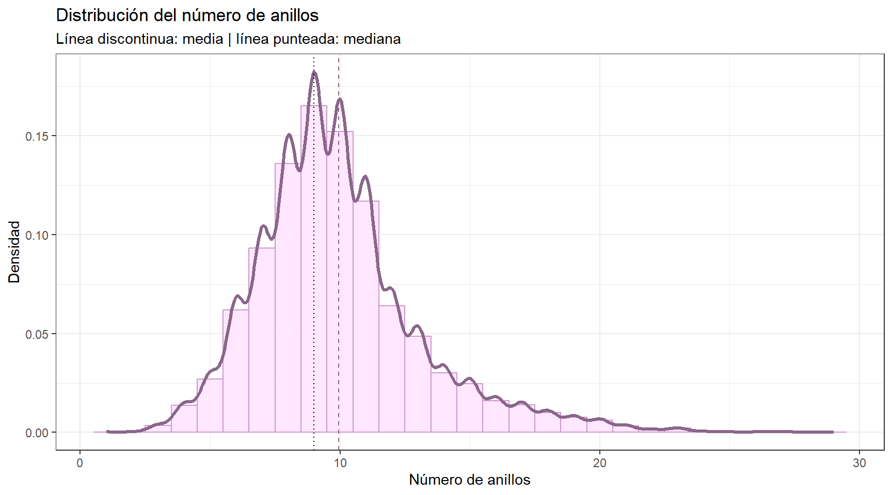
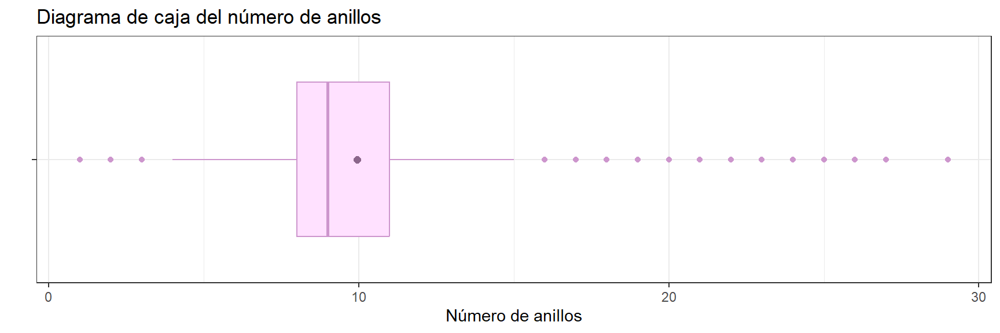
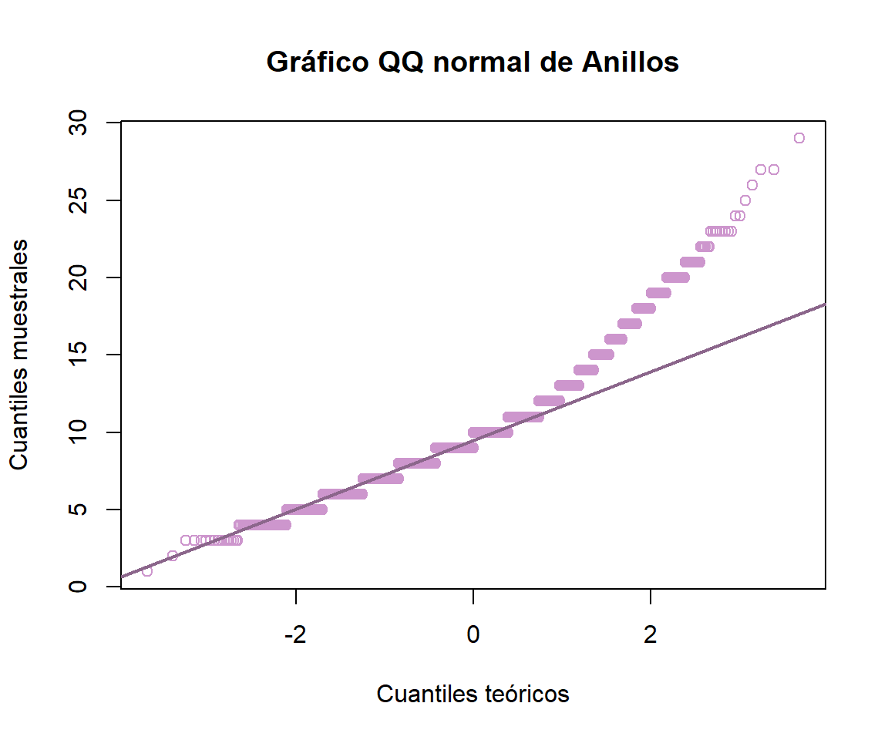

Capitulo 6 Análisis exploratorio de la variable respuesta (Anillos)
6.1 Medidas descriptivas
| n | media | sd | mediana | RIC | Q1 | Q3 | minimo | maximo | asimetria | curtosis | atipicos |
|---|---|---|---|---|---|---|---|---|---|---|---|
| 4171 | 9.939 | 3.223 | 9 | 3 | 8 | 11 | 1 | 29 | 1.114 | 5.329 | 278 |
Interpretación: Se observa que la variable Anillos cuenta con 4.171 observaciones, una media de 9.939 y una mediana de 9, lo que indica que el número de anillos se concentra alrededor de esos valores. La desviación estándar es de 3.223 y el rango intercuartílico es de 3, mostrando cierta dispersión en los datos. Los valores oscilan entre 1 y 29 anillos. La asimetría positiva de 1.114 indica que la distribución presenta una cola hacia la derecha, mientras que la curtosis de 5.329 señala una mayor concentración y presencia de valores extremos. Finalmente, se identificaron 278 valores atípicos, lo que evidencia la presencia de observaciones alejadas del comportamiento general de los datos.
abalone %>%
ggplot(aes(x = Anillos)) +
geom_histogram(aes(y = after_stat(density)), binwidth = 1,
fill = col_fill, color = col_line, alpha = 0.8) +
geom_density(color = col_dark, linewidth = 1.2) +
geom_vline(xintercept = res_y$media, linetype = "dashed", color = col_dark) +
geom_vline(xintercept = res_y$mediana, linetype = "dotted", color = "black") +
labs(title = "Distribución del número de anillos",
subtitle = "Línea discontinua: media | línea punteada: mediana",
x = "Número de anillos", y = "Densidad") +
theme_bw()
Interpretación: El histograma muestra la distribución del número de anillos de los abalones, observándose una mayor concentración de individuos entre 8 y 11 anillos, con un valor máximo de frecuencia alrededor de 9. La media (9.939) y la mediana (9) son cercanas, aunque la media es ligeramente superior. Se evidencia una asimetría positiva, debido a que la distribución presenta una cola más larga hacia la derecha, donde se encuentran los individuos con mayor número de anillos. Esto indica que la distribución no es completamente simétrica y que existen pocos individuos con cantidades elevadas de anillos.
abalone %>%
ggplot(aes(x = Anillos, y = "")) +
geom_boxplot(fill = col_fill, color = col_line) +
stat_summary(fun = mean, geom = "point", shape = 20, size = 3,
color = col_dark, orientation = "y") +
labs(title = "Diagrama de caja del número de anillos", x = "Número de anillos", y = "") +
theme_bw()
Interpretación: El diagrama de caja muestra que la mediana del número de anillos es de 9, mientras que el 50 % central de los datos se encuentra aproximadamente entre 8 y 11 anillos, con un rango intercuartílico de 3. Se observa la presencia de numerosos valores atípicos tanto en la parte inferior como en la superior, aunque son más abundantes hacia los valores altos, llegando hasta 29 anillos. Además, la media se encuentra por encima de la mediana, lo que coincide con la asimetría positiva observada anteriormente.6.2 Pruebas de normalidad
\(H_0\): Anillos sigue una distribución normal vs. \(H_1\): Anillos no sigue una distribución normal.
qqnorm(abalone$Anillos, main = "Gráfico QQ normal de Anillos",
xlab = "Cuantiles teóricos", ylab = "Cuantiles muestrales", col = col_line)
qqline(abalone$Anillos, col = col_dark, lwd = 2)
Interpretación: El gráfico Q-Q normal permite evaluar si la variable Anillos sigue una distribución normal. Se observa que los puntos se alejan considerablemente de la línea de referencia, especialmente en la parte superior, donde se encuentran por encima de ella. Esto indica una desviación de la normalidad y evidencia una asimetría positiva, es decir, una mayor concentración de datos en valores bajos y medios, con una cola extendida hacia los valores altos. Por lo tanto, se concluye que la variable Anillos no presenta una distribución normal.
##
## Shapiro-Wilk normality test
##
## data: abalone$Anillos
## W = 0.93109, p-value < 2.2e-16##
## Lilliefors (Kolmogorov-Smirnov) normality test
##
## data: abalone$Anillos
## D = 0.14551, p-value < 2.2e-16norm_y <- tibble(
Prueba = c("Shapiro-Wilk", "Lilliefors (Kolmogorov-Smirnov)"),
Estadistico = c(sw_y$statistic, li_y$statistic),
p_valor = c(sw_y$p.value, li_y$p.value)
) %>% mutate(Decision = decision(p_valor))
norm_y %>% tabla("Pruebas de normalidad para Anillos", d = 4)| Prueba | Estadistico | p_valor | Decision |
|---|---|---|---|
| Shapiro-Wilk | 0.9311 | 0 | se rechaza H0 |
| Lilliefors (Kolmogorov-Smirnov) | 0.1455 | 0 | se rechaza H0 |
INTERPRETACIÓN Las pruebas de normalidad Shapiro-Wilk y Lilliefors presentan estadísticos de 0.9311 y 0.1455, respectivamente, con valores p iguales a 0. En ambas pruebas se rechaza la hipótesis nula (H0), que establece que los datos siguen una distribución normal. Por lo tanto, se concluye que la variable Anillos no presenta una distribución normal, lo cual coincide con lo observado en el gráfico Q-Q, donde los puntos se alejan de la línea de referencia.